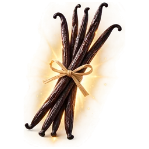

0 gverteMusique
Effets et ambiance
Jeu et code : Kwélafé Production.
Moteur : Three.js (MIT). Polices : Bangers, Baloo 2 (SIL OFL).
Sous-bois, lianes de vanille et icônes : images créées avec ElevenLabs pour Kwélafé. Fleurs, boutons et gousses : 3D calculée par le jeu.
Sons et musiques : générés avec ElevenLabs pour Kwélafé (usage commercial autorisé par l'abonnement). Aucune voix.
Faits du carnet : Département de La Réunion, DAAF, cahier des charges IGP, sources botaniques.
Aucun personnage, logo ou son d'un autre jeu. Détail : credits.md.